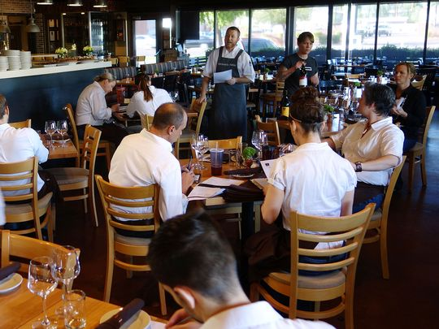
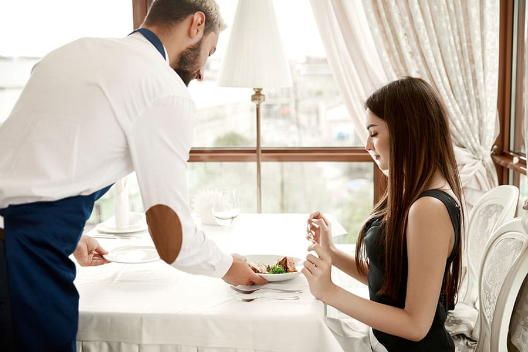

Todo empezó con un sueño… Un día Gregory citó a su hermana Arianna para comentarle que quería abrir un restaurante, una de esas asignaturas pendientes. Para ello necesitaba un socio en el que confiase ciegamente y allí en un sofá de su casa, cerveza en mano, se empezó a forjar la idea. No tardaron en empezar a hablar de una de sus pasiones, la diversa comida que hay en el mundo, e hicieron un recorrido por los mejores restaurantes de San José, Cartago, Heredia, Alajuela… y llegaron a una conclusión: lograr un mejor sabor y una mejor experiencia.
El proceso empieza de cero cada mañana, nuestro pequeño establecimiento y con nuestros primeros clientes yéndose muy a gusto, mantener el producto con la calidad y sabor que la elaboración de nuestros productos requiere. Condimentar cada una de ellas con diferentes ingredientes para crear recetas únicas y equilibradas con producto local y ecológico siempre que sea posible para garantizar su frescura.
